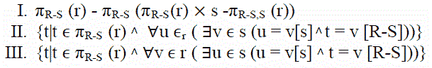

Following questions have been asked in GATE 2009 CS exam.
1) Consider two transactions T1 and T2, and four schedules S1, S2, S3, S4 of T1 and T2 as given below:
T1 = R1[X] W1[X] W1[Y]
T2 = R2[X] R2[Y] W2[Y]
S1 = R1[X] R2[X] R2[Y] W1[X] W1[Y] W2[Y]
S2 = R1[X] R2[X] R2[Y] W1[X] W2[Y] W1[Y]
S3 = R1[X] W1[X] R2[X] W1[Y] R2[Y] W2[Y]
S1 = R1[X] R2[Y]R2[X]W1[X] W1[Y] W2[Y]
Which of the above schedules are conflict-serializable?
(A) S1 and S2
(B) S2 and S3
(C) S3 only
(D) S4 only
Answer (B)
There can be two possible serial schedules T1 T2 and T2 T1. The serial schedule T1 T2 has the following sequence of operations
R1[X] W1[X] W1[Y] R2[X] R2[Y] W2[Y]
And the schedule T2 T1 has the following sequence of operations.
R2[X] R2[Y] W2[Y] R1[X] W1[X] W1[Y]
The Schedule S2 is conflict-equivalent to T2 T1 and S3 is conflict-equivalent to T1 T2.
2) Let R and S be relational schemes such that R={a,b,c} and S={c}. Now consider
the following queries on the database:

{kind=link}
IV) SELECT R.a, R.b
FROM R,S
WHERE R.c=S.c
Which of the above queries are equivalent?
(A) I and II
(B) I and III
(C) II and IV
(D) III and IV
Answer (A)
I and II describe the division operator in Relational Algebra and Tuple Relational Calculus respectively. See Page 3 of this and slide numbers 9,10 of this for more details.
3) Consider the following relational schema:
Suppliers(sid:integer, sname:string, city:string, street:string) Parts(pid:integer, pname:string, color:string) Catalog(sid:integer, pid:integer, cost:real)
Consider the following relational query on the above database:
SELECT S.sname
FROM Suppliers S
WHERE S.sid NOT IN (SELECT C.sid
FROM Catalog C
WHERE C.pid NOT IN (SELECT P.pid
FROM Parts P
WHERE P.color<> 'blue'))
Assume that relations corresponding to the above schema are not empty. Which one of the following is the correct interpretation of the above query?
(A) Find the names of all suppliers who have supplied a non-blue part.
(B) Find the names of all suppliers who have not supplied a non-blue part.
(C) Find the names of all suppliers who have supplied only blue parts.
(D) Find the names of all suppliers who have not supplied only blue parts.
Answer (A)
The subquery “SELECT P.pid FROM Parts P WHERE P.color<> ‘blue’” gives pids of parts which are not blue. The bigger subquery “SELECT C.sid FROM Catalog C WHERE C.pid NOT IN (SELECT P.pid FROM Parts P WHERE P.color<> ‘blue’)” gives sids of all those suppliers who have supplied blue parts. The complete query gives the names of all suppliers who have supplied a non-blue part
4) Assume that, in the suppliers relation above, each supplier and each street within a city has a unique name, and (sname, city) forms a candidate key. No other functional dependencies are implied other than those implied by primary and candidate keys. Which one of the following is TRUE about the above schema?
(A) The schema is in BCNF
(B) The schema is in 3NF but not in BCNF
(C) The schema is in 2NF but not in 3NF
(D) The schema is not in 2NF
Answer (A)
A relation is in BCNF if for every one of its dependencies X ? Y, at least one of the following conditions hold:
X ? Y is a trivial functional dependency (Y ? X)
X is a superkey for schema R
Since (sname, city) forms a candidate key, there is no non-tirvial dependency X ? Y where X is not a superkey
Please see GATE Corner for all previous year paper/solutions/explanations, syllabus, important dates, notes, etc.